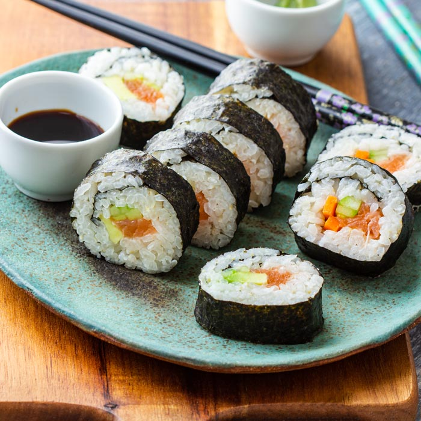

Sushi

Description
Sushi rolls are a healthy and easy meal to make. A traditional meal in Japan sushi rolls can be filled with any ingredients you choose. Try smoked salmon or a simple cucumber and avocado roll. For a little extra spice, add a drop of wasabi.
Ingredients
- 1 1/3 cups water
- 2/3 cup uncoooked short-grain white rice
- 3 tablespoons rice vinegar
- 1 1/2 teaspoons salt
- 4 sheets nori seaweed sheets
- 1/2 pound imitation crabmeat, flaked
- 1 avocado - peeled, pitted and sliced
- 1/2 cucumber, peeled, cut into small strips
- 2 tablespoons pickled ginger